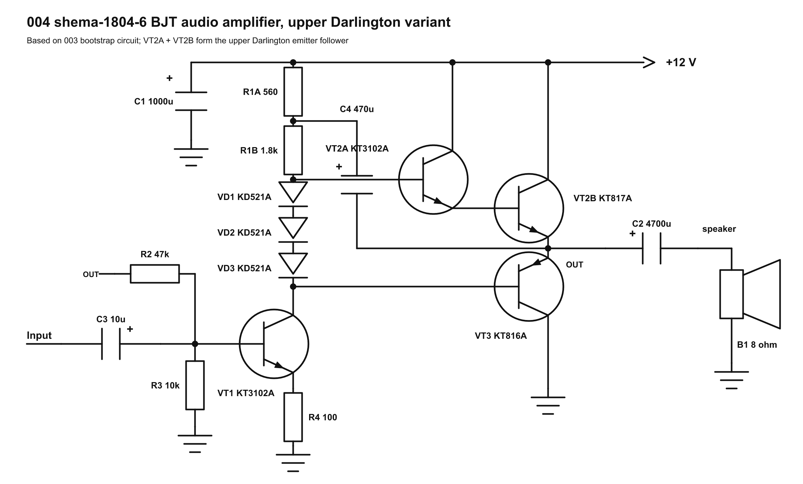
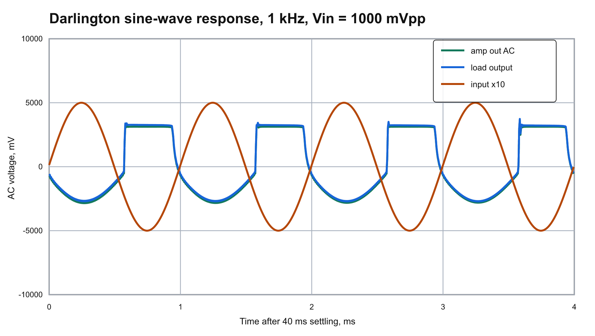
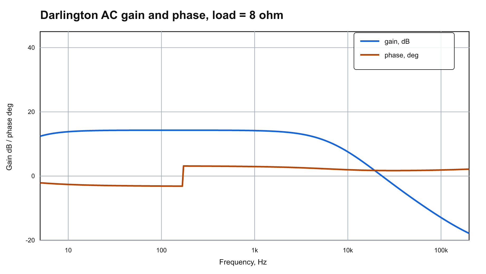
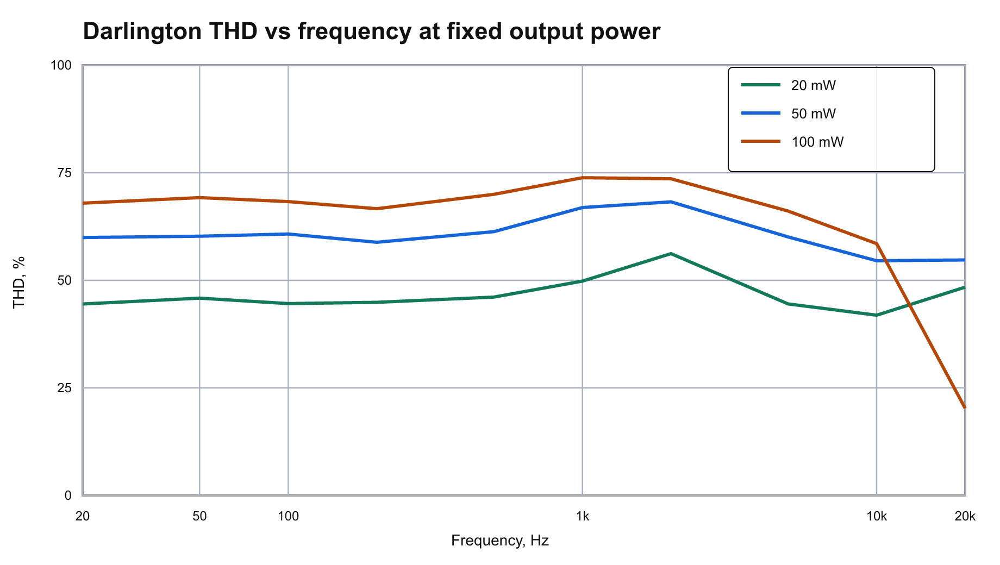
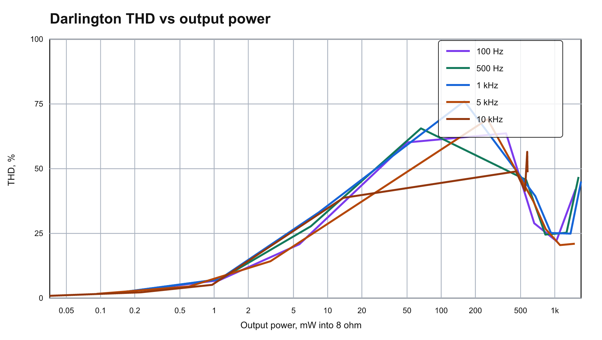
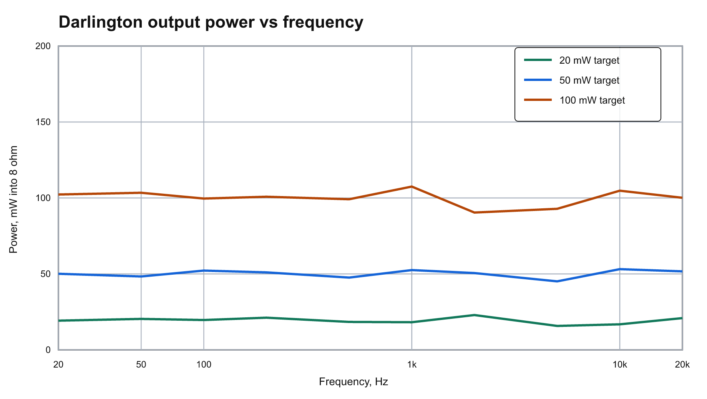
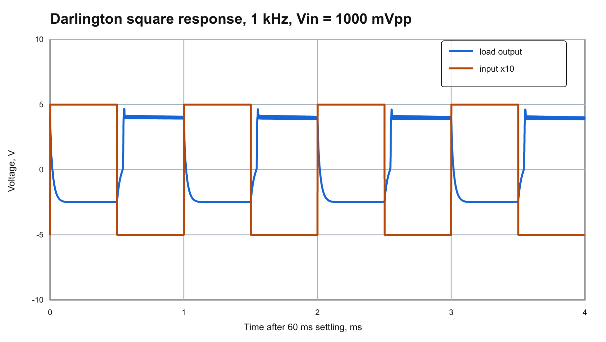
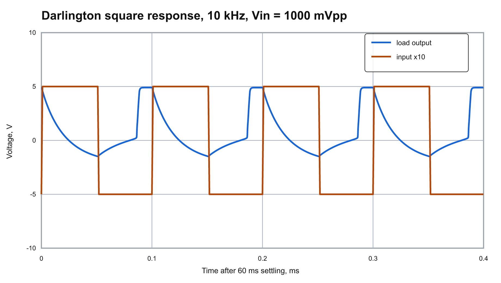

004 RadioStorage shema-1804-6 Upper Darlington Variant
This folder is derived from 003_radiostorage_shema_1804_6. The circuit keeps the bootstrap voltage-addition network and adds an extra NPN transistor in the upper output arm, so VT2A and VT2B work as a Darlington emitter follower.
Source image:
https://radiostorage.net/uploads/Image/schemes/18/shema-1804-6.png
GitHub Preview
Source Image

Reconstructed Schematic

Simulation Plots







Circuit Changes Compared With 003
VT2A: added KT3102A NPN Darlington driver,Bf = 100.VT2B: existing KT817A NPN upper power transistor,Bf = 50.VD3: added KD521A diode in the bias chain so the upper Darlington pair has an extra base-emitter drop available.VT3: lower KT816A PNP emitter follower, unchanged.R1A,R1B,R2,R3,R4,C2, andC4: kept from the 003 bootstrap run for a direct comparison.
ngspice Check
The Darlington model converged in ngspice.
Operating point from data/darlington/ngspice.log:
V(b_in): about 0.891 VV(e_vt1): about 0.231 VV(drive): about 5.490 VV(b_top): about 7.446 VV(b_upper): about 6.835 VV(out): about 6.160 V before output capacitorV(load): about 0.000 V DC after output capacitor- VT2A collector current: about 0.36 mA
- VT2B collector current: about 18.63 mA
- VT3 collector current: about 18.53 mA
- Total supply current in this simplified transistor model: about 20.92 mA
THD Sweeps
The THD-vs-frequency graph now has separate target-power curves at 20 mW, 50 mW, 100 mW. Each point retunes the input amplitude toward the requested output power before estimating harmonics 2-5 from transient data.
At 1 kHz and the 100 mW target, the simulated point is:
- Output power:
107.50 mW - Load RMS voltage:
0.927 V - Input swing:
179.7 mVpp - THD estimate:
73.850 %
The THD-vs-output-power graph now includes 100 Hz, 500 Hz, 1 kHz, 5 kHz, 10 kHz. The largest simulated power-sweep point is about 1704.35 mW into 8 ohm with 45.06 % THD.
Non-Clipping Check
- Sine input swing:
1.0000 Vpp. - Output node before C2:
5.1544..11.7244 V. - Rail headroom at that node: at least
0.2756 V. - Speaker/load swing after C2:
6.6022 Vpp.
Square-Wave Response
- 1 kHz: load swing about
7.163 Vpp. - 10 kHz: load swing about
6.392 Vpp.
Reusable Runner
Run the complete regeneration flow from the repository root with:
python scripts\run_circuit_result.py results\004_radiostorage_shema_1804_6_darlington\variants\darlington.pyFiles
source/shema-1804-6.png: original downloaded image.variants/darlington.py: reusable circuit variant with schematic drawing, SPICE netlists, measurements, and result description.schematic/reconstructed_amplifier_darlington.svg/png: redrawn Darlington schematic.netlists/radiostorage_amp_darlington.cir: main ngspice netlist.data/darlington/ac_response.csv: AC gain/phase data from ngspice.data/darlington/transient_1khz.csv: 1 kHz transient data from ngspice.data/darlington/frequency_sweep.csv: fixed-output-power frequency sweep with THD estimates.data/darlington/power_sweep.csv: multi-frequency input-level sweep with THD versus output power.data/darlington/square/*.csv: 1 kHz and 10 kHz square-wave transient data.plots/darlington_*.svg/png: generated plots for the Darlington variant.
{kind=link}
{kind=link}
{kind=link}
{kind=link}
{kind=link}
{kind=link}
{kind=link}
{kind=link}